These use the gradient from your current article images, add a short headline the way Aircall, Grammarly and Lattice do, and build a visual from the article's own subject. No question marks, no checkmark stamp, no prices.
Your gradient, kept
Current coverGradient rebuilt, without the checkmark
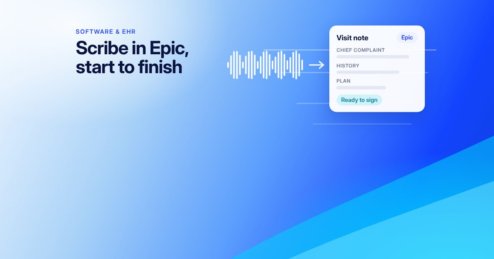
Sampled from your current images: light sky blue on the left sweeping into electric blue (#1344fd to #2e64fd), a cyan wave (#02d0fd) rising at the bottom right, soft haze and thin light streaks.
The 10 designs
How a Scribe Works in Epic?Voice waveform turning into a signed visit note, tagged Epic
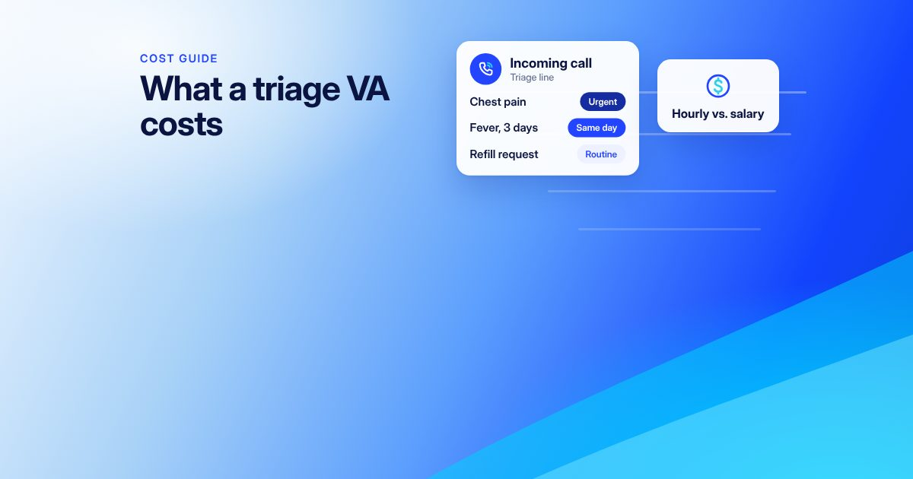
How Much Does a Telephone Triage Virtual Assistant Cost?An incoming call sorted into Urgent, Same day and Routine
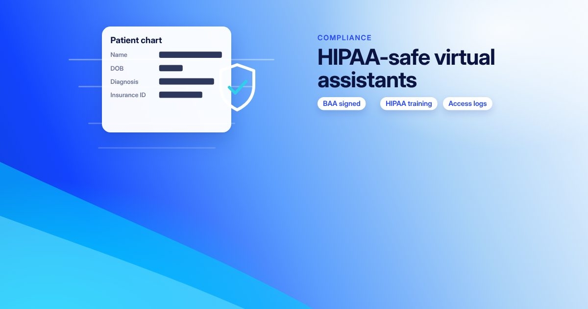
Can a Virtual Assistant Be HIPAA Compliant? Safeguards, Training and BAAsA patient chart with PHI masked behind a shield, plus BAA, training and access-log chips
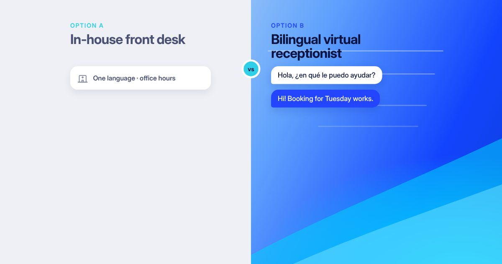
Bilingual Virtual Dental Receptionist vs. In-House Staff: Cost, Pros, and Which to ChooseIn-house desk in grey beside a bilingual VA chat in your gradient
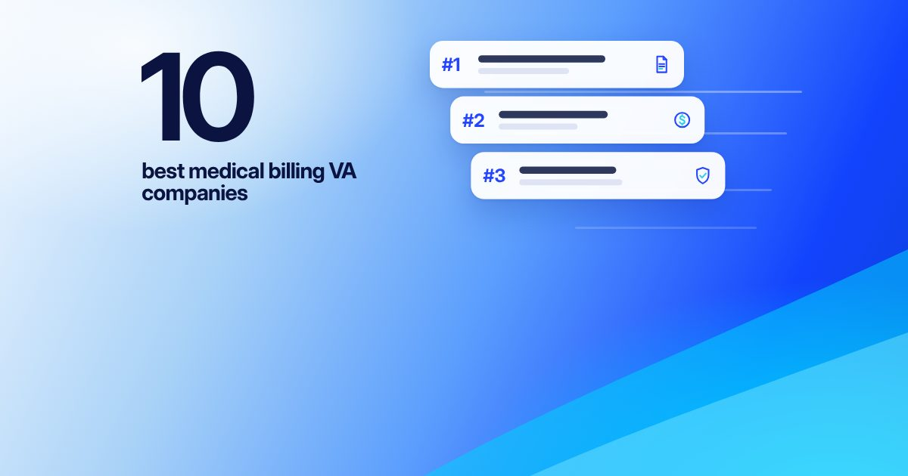
10 Best Medical Billing Virtual Assistant Companies (2026)The count, large, beside ranked company cards
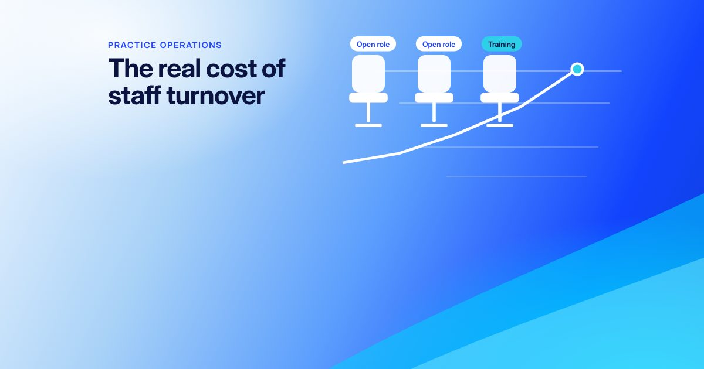
Medical Office Staff Turnover, What It Costs and How to Cut ItEmpty chairs tagged "Open role" and a climbing cost line
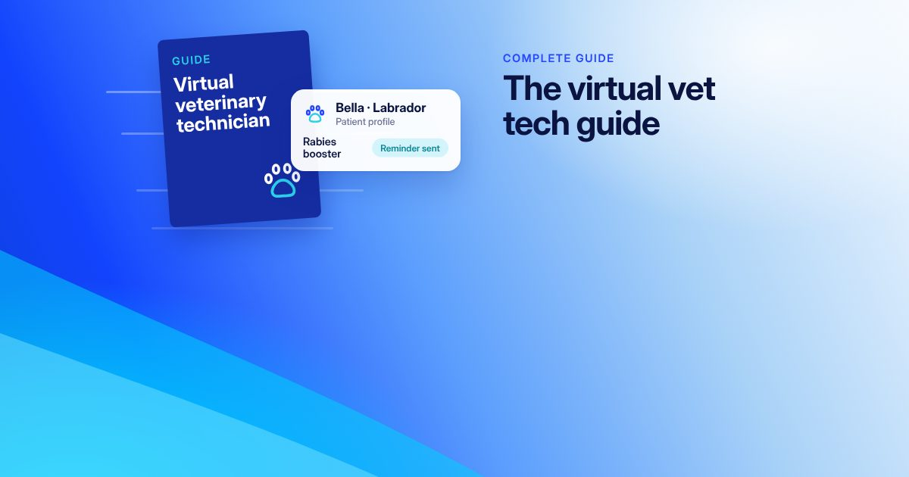
Virtual Veterinary Technician: The Complete GuideA guide booklet plus a pet patient card with a vaccine reminder
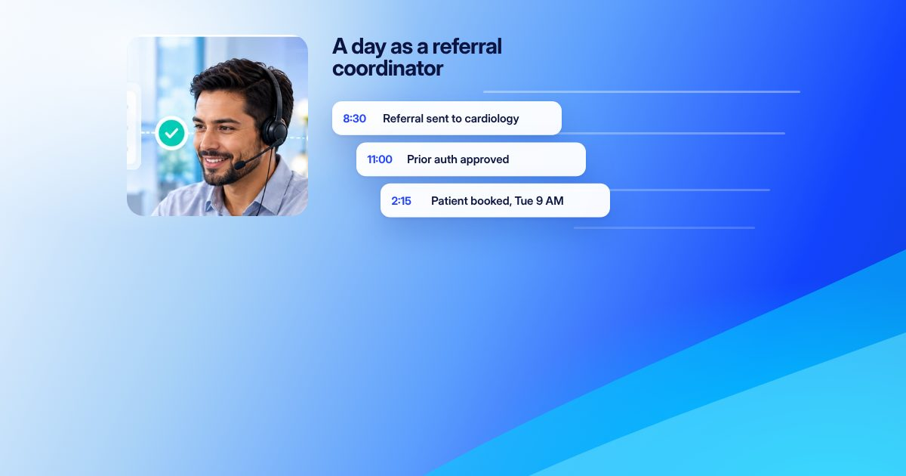
A Day in the Life of a Virtual Referral CoordinatorThe VA beside a timeline of the day's referrals
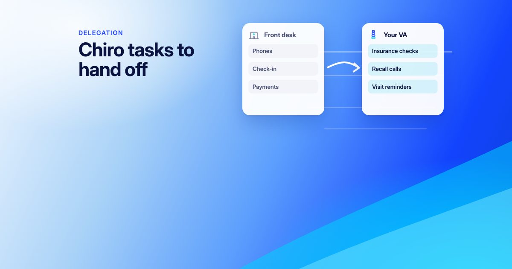
Tasks to Delegate in a Chiropractic PracticeTasks moving from the front desk to the VA
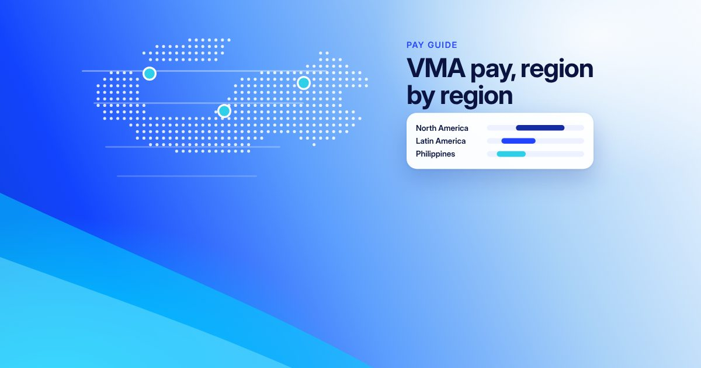
How Much Do Virtual Medical Assistants Earn? Sourced Pay Ranges by RegionA dot map with pay-range bars by region (no figures)
On your articles page
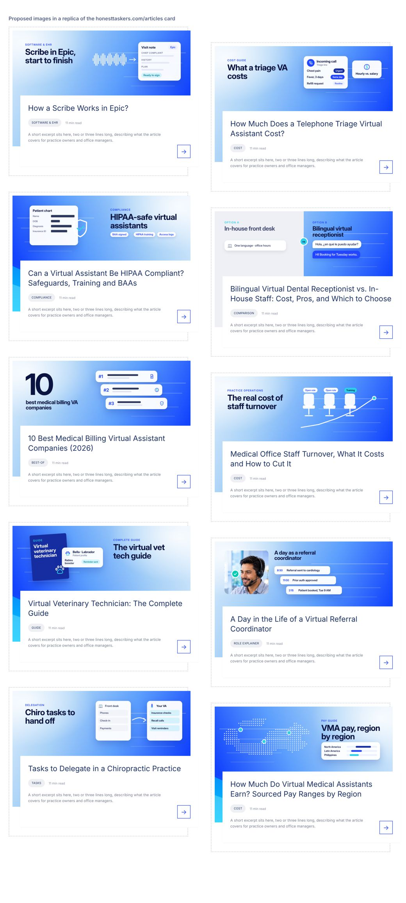
Your card shows only the top 56% of each image and trims about 115px from each side, so every headline and visual sits inside that area.
Rules used
Headline of 3 to 6 words that names the topic, never the full title.
The visual shows the article's subject: the call, the chart, the note, the map.
One gradient for every cover; the layout and visual change per article.